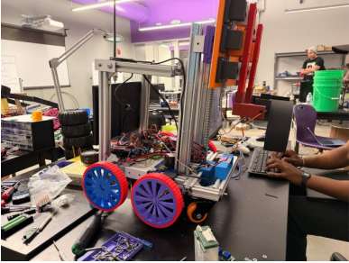
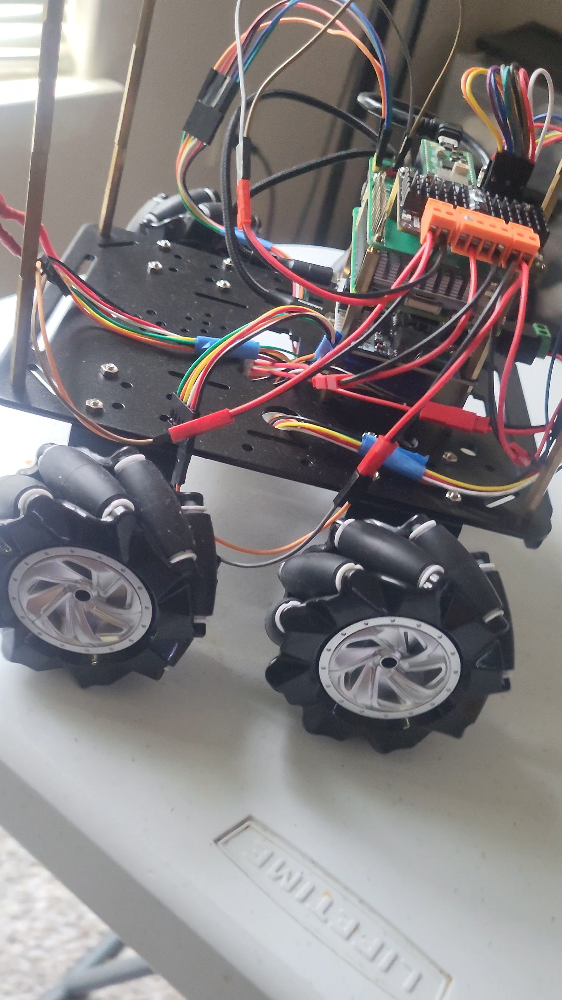
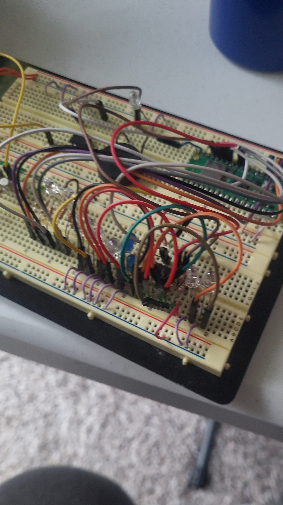

Projects
Selected work

Wonkybot
My UCA senior design capstone: an autonomous differential-drive robot that clears an arena of colored pneumatic balls and deposits them into their respective colored buckets. A Raspberry Pi 5 runs the ROS 2 Jazzy stack; a Raspberry Pi Pico handles the drive motors, servos, and stepper arm. A single Intel RealSense D455 does double duty, feeding depth-based obstacle avoidance for Nav2/AMCL navigation and driving an HSV-plus-shape vision classifier that distinguishes balls from buckets. Includes a vision-only fallback controller for when SLAM localization isn't available, and a phone-mic voice interface to start and select runs.

Glitch MK2
A personal robot I'm currently building, drawing on both WonkyBot from senior design and HomeR from robotics. The main differences: it runs 9V motors with hall sensors instead of 12V motors with encoders, and uses mecanum wheels so it can strafe. The goal is to handle all the same tasks as those earlier projects, and I plan to add machine learning to push its autonomous capabilities further.

Randomizing Passcode
An embedded-systems concept I'm developing: three circuits working in tandem to secure and open a lock. The first uses an 8-bit shift register IC whose Q pins map to specific values/operators; the code is randomized so only the user knows the combination. A second circuit drives a piezo buzzer for audio feedback, and a third uses LEDs for visual indication. All three route to a Raspberry Pi Pico for PWM and control.